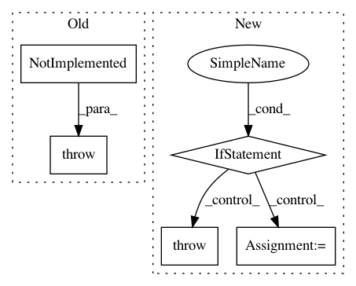

e01dc00651cb36ee62d3cb9c97d82a4892e1f001,nussl/audio_signal.py,AudioSignal,__mul__,#AudioSignal#Any#,903
Before Change
def __mul__(self, other):
assert isinstance(other, numbers.Real)
raise NotImplemented("Not implemented yet.")
def __len__(self):
return self.signal_length
After Change
return self - other
def __mul__(self, other):
if not isinstance(other, numbers.Real):
raise ValueError("Can only multiply/divide by a scalar!")
self.audio_data *= other
return self
def __div__(self, other):
return self * (1 / float(other))
In pattern: SUPERPATTERN
Frequency: 3
Non-data size: 5
Instances
Project Name: interactiveaudiolab/nussl
Commit Name: e01dc00651cb36ee62d3cb9c97d82a4892e1f001
Time: 2017-02-09
Author: ethanmanilow@gmail.com
File Name: nussl/audio_signal.py
Class Name: AudioSignal
Method Name: __mul__
Project Name: regel/loudml
Commit Name: aecf2630d05e06351315ad0ae696f0b87178c279
Time: 2018-02-01
Author: vianney@redmintnetwork.fr
File Name: loudml-influx/loudml/influx.py
Class Name:
Method Name: _build_agg
Project Name: interactiveaudiolab/nussl
Commit Name: 9d9ef625dccb7ba0ed3295f18d90de9d6dd59469
Time: 2017-04-04
Author: ethanmanilow@gmail.com
File Name: nussl/audio_signal.py
Class Name: AudioSignal
Method Name: __mul__